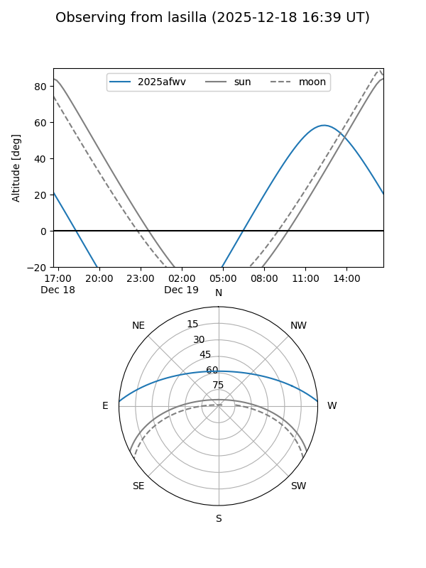
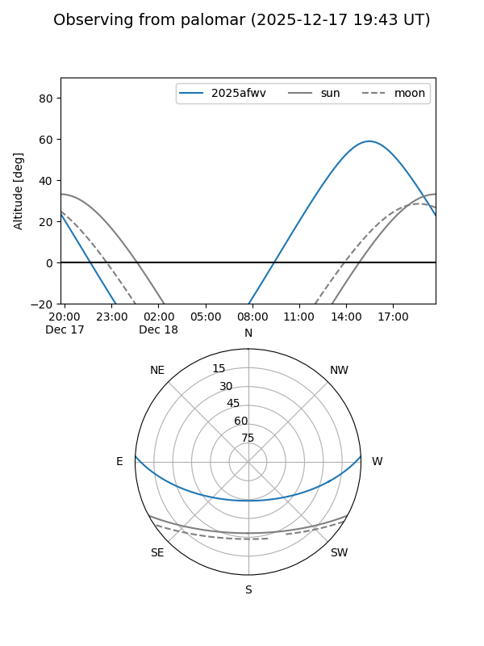
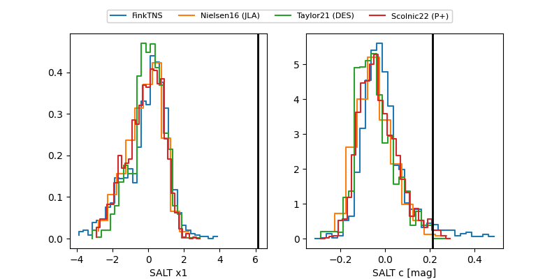

2025afwv
Target 2025afwv at 2025-12-20 16:25
Aliases and brokers:
FINK: fink-portal.org/ZTF25acgculc
Lasair: lasair-ztf.lsst.ac.uk/objects/ZTF25acgculc
ALeRCE: alerce.online/object/ZTF25acgculc
TNS: wis-tns.org/object/2025afwv
YSE: ziggy.ucolick.org/yse/transient_detail/2025afwv
alt names
ZTF25acgculc (ztf,fink_ztf)
2025afwv (tns,yse)
Coordinates:
equatorial (ra, dec) = 202.6044,+2.50310
equatorial (HMS+DMS) = 13:30:25.05,+02:30:11.14
galactic (l, b) = (325.3399,+63.66608)
Flags:
Photometry:
last ztfg=19.99, ztfr=19.64
3 ztfg, 10 ztfr detections
Lightcurve

Visibility


Additional plots
